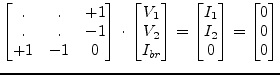
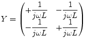
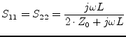
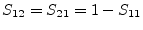

During DC simulation an inductor is a short circuit, thus, its MNA matrix entries need an additional row and column.
|  | (9.13) |
During AC simulation the Y-parameter matrix of an ideal inductor
with the inductance  writes as follows.
writes as follows.
|  | (9.14) |
The scattering parameters of an ideal inductor with inductance  writes as follows.
writes as follows.
|  | (9.15) |
|  | (9.16) |
An ideal inductor is noise free.